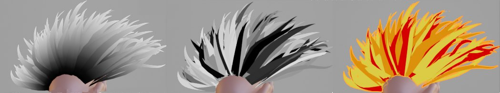
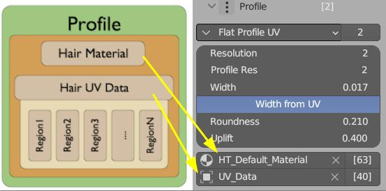

Hair UV and Material setup¶
Default Hair Material¶

Hair Tool comes with built-in hair shader named HT_Defautl_Material. It was made to look best in real-time renderer EEVEE.
This default material is using single texture with:
- RGB channels holding depth pass
- alpha channel for opacity
In most cases it will be assigned automatically by add-on (when generating hair, adding profile etc), but you can also assign it manually with: Ctrl+Shift+H Pie Menu > Import Default Hair material. It will assign default UV data too.
demo of build in Hair Tool Default material
Note: If you want to plug in your own texture into Hair Material, make sure its UV input is connected to
HTool_UVnode. It will properly UV map your Hair Strands.
Attributes¶
Default material can use several attributes to change material look (or debug hair information):
 Factor | Random | UVDebugCol
Require: Profile > Other > Generate Curve Attribute:
- Factor - black and white gradient.
- Random - Random B&W color assigned per strand.
- SampledUV - Sample UVs from source mesh. Requires: Requires 'Sampled UV' to be set. Example setup in here
- SampledCol - Sample Vertex Color from source mesh. Requires 'Sampled Color' to be set.
SampledUV | SampledColor | SystemColor
Require: Profile > Other > UV Debug Colors
- UVDebugCol - Visualize UV Boxes by colors. You can set uv box color using Hair UV operator.
Requires Color Set deformer
- SystemColor - Display SystemColor attribute.
Requires Generate AO modifier
- AO - Visualize generated hair AO attribute.
AO attribute
Hair System UV's¶
In Hair Tool, UV Layout is stored in the UV_data helper object in Profile modifier (see image below). UV Layout describes number and shape of UV regions (rectangular boxes) on your texture. Each UV region can be then assigned different hair strands (for example using Set UV Region operator) to create multi-textured hair.
Use the Hair UV operator in the UV Image Editor to edit the layout of UV regions.

In Hair Tool, UV Data is attached to Hair System Profile
UV_datadoes not tell which UV Regions should be assigned to which hair strand - for that use UV Regions Distribute deformer (for procedural strands) or Set UV Regions operator (for 'real' strands).
Note: Unlike Blender mesh objects, where each mesh holds its own UV map, Hair Tool UV Data can be shared (instanced) across multiple hair objects. This means you don't have to recreate the same UV map layout repeatedly—simply create it once and reuse it on multiple hair objects using the Copy UV data to selected button located in menu next to the 'UV Data' input. On the image above menu is marked as [40], indicating that 40 hair objects are using and sharing the same UV layout.
Note: Do not use Blender's built-in 'Convert To Mesh' operator on curve hair, or your output mesh UVs will be messed up. Instead, use Curve ribbons to mesh ribbons. This way curve Material UVs will be properly, converted to mesh UVs.
Editing Hair UV's¶
Using Hair UV button in UV image editor to edit HairCard UV layout
To edit Hair UV layout (which is stored in Profile > UV_data object), follow these steps:
- Open UV Image Editor > top Header Bar > press Hair UV button (located on far right)
- Left Click and drag to define rectangular UV box. Drag corners of existing UV boxes to adjust their shape.
- [ENTER] - save and finish
Other useful hotkeys while editing UVs:
- [G,S] - keys to move and scale uvs boxes.
- [Delete] - do delete UV Box,
- [Shift + Delete] to reset all UVs to one sigle box (full texture)
If you cannot see Texture in viewport, then check the following:
- Make sure Material is assigned in 'Profile' panel (or use Import Default Material)
- Material should contain
HTool_UVnode and be linked to your texture - without it UVs won't work (transparent hair). After converting Hair System to mesh, you can use 'normal' mesh uvs - If you are generating hair procedurally - make sure UV Region Distribute Deformer has been added
- For more info check FAQ - why my texture looks wrong,
Note2: If you want to flip strand texture in Y direction (top/down), just hover your mouse over UV box and press 'F'
Demo of UV Offset feature, which allows you to increase UV density toward root or tip of hair strands
Set UV region¶
After you finished editing Hair UVs layout, you can assign selected hair strands to particular texture regions, using:
- Ctrl+Shift+H >
Set UV Regionmodal operator,
While running Set UV Regions operator, use:
- Left Mouse Button [LMB] to assign UV Regions from under cursor, to selected strands. You can select multiple UV Regions by [Shift + LMB] clicking on them, which will randomly assign all selected UV Regions.
- Press [ENTER] to finish and save changes
Depending on hair type (procedural or 'real' geometry strands) - operator will behave differently:
- for 'real' geometry strands objects, UV Region ID will be stored directly in each curve attribute
- for procedurally generated Hair Strands objects, UV Region Distribute deformer will be created (unless one already exists) - to distribute UVs Boxes onto strands
Assigning UV regions to selected strands using Set UV Region. [Shift+click] to assign multiple UV regions
Set Profile IDs¶
Note: This operator is not strictly linked to the hair material or UVs, but its purpose is similar to the set UV region operator
When using Mesh Profile or Multi Curve Profile you can assign particular profile object to selected with Set Profile IDs operator. It will assign integer 'Profile_ID' attribute, to each selected strand and this in turn will tell Hair Tool which profile object to use for these strands.
Assigning profile objects to selected strands using Set Profile IDs. Shift click on multiple profile objects to assign them randomly
For procedurally generated hair strands, you can use Profile Distribute deformer to assign profile objects to hair strands.
Offset UV¶
It moves UV points more toward the root or tip on hair strand. As a result you can stretch UVs and change texture look. See video below:
Auto UV¶
If you have 'real' curve hair object with Hair Profile attached, then you can use Enable Auto UV to automatically assign UV regions to hair strands - without having to use Set UV Region manually, each time add or remove hair curve.
Auto UV - will randomly assign selected UV Regions/materials to hair strands.
In this example we Created few UV Regions. They are automatically assigned to hair strands thanks to Enable Auto UV feature
Enable Auto UV - is located in UV Image Editor -> Right side panel -> Hair Tool tab